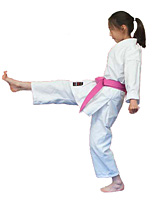

About Bunbo Dojo
Bunbu Dojo is West Bridgford’s largest martial arts school.
The majority of students are children, with the current range of ages being from five to fourteen, though we also have adult classes (those aged fourteen-plus normally train in the adult class).

Classes run five days a week, at three venues in West Bridgford.
Prospective students are welcome to come and join in for a couple of classes to see what it’s all about. If you’d like more information before coming to a class, please call or email.
We like to support our students and the local community, through re-investment of funds back into the club, extra training where required at no charge, instructor training for keen students, and community work by the students to encourage their personal growth.